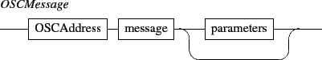
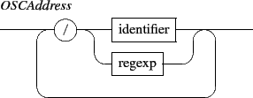
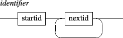

Next: 1.1 Address space
Up: INScore OSC Messages Reference
Previous: Contents
Contents
Index
1. General format
An OSC message is made of an OSC address, followed by a message string, followed by zero to n parameters. The message string could be viewed as the method name of the object identified by the OSC address.
The OSC address could be string or a regular expression matching several objects.



The OSC types int32, float32 and OSC-string are used as terminal symbols and are denoted by int32, float32 and string.
Subsections
Grame - Interlude project [ANR-08-CORD-010]